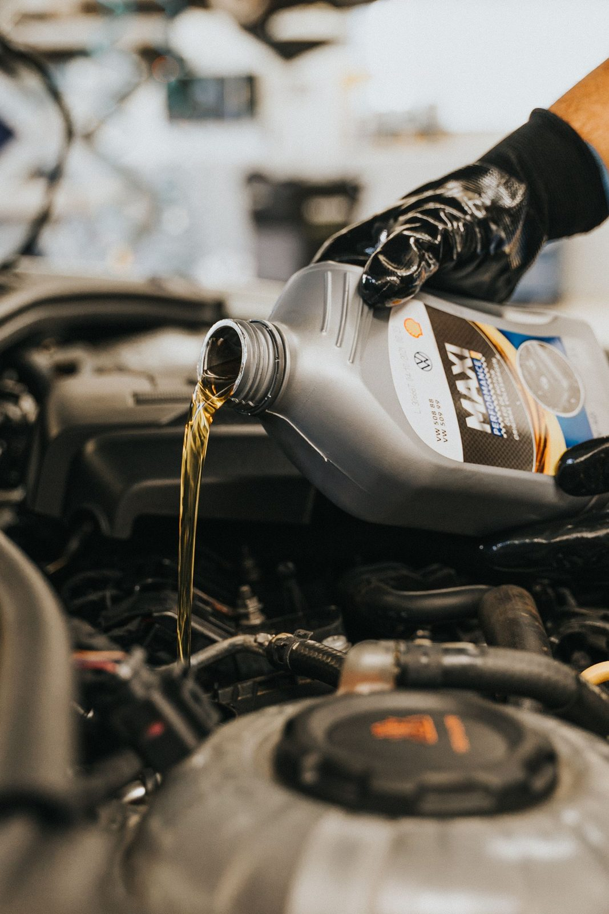

01

Vidange & filtres
Huile neuve adaptée à votre moteur, filtre à huile, filtre à air, filtre d'habitacle, niveaux refaits. Je remets le compteur d'entretien à zéro et je vous note la prochaine échéance.
- Vidange
- Filtre à huile
- Filtre à air
- Niveaux